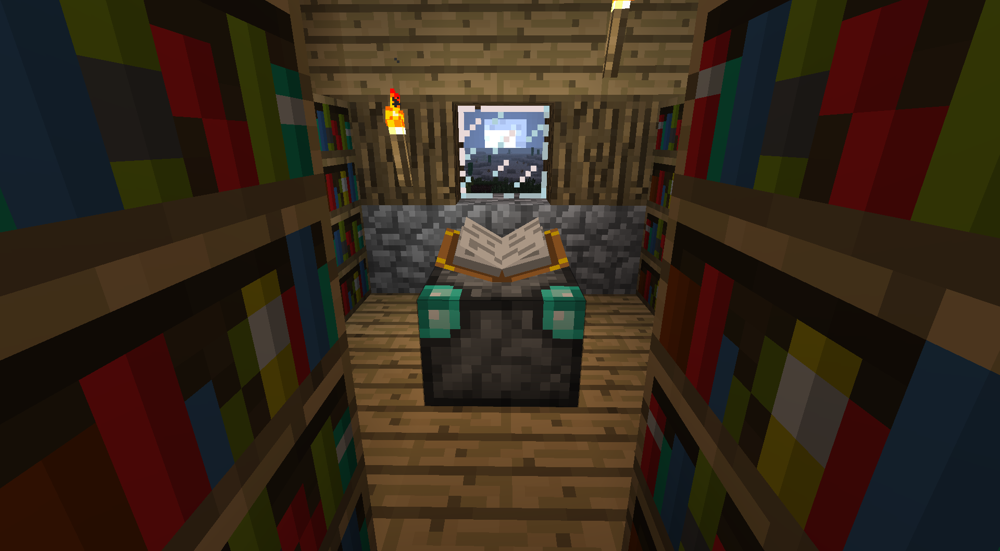

Enchanted Book
The Enchanted book is a type of book that stores one or more enchantments of any type. It can be applied to any valid items using an anvil, using the book will consume the book.

Mending
Instead of reparing the items using experience the enchantment now removes the reparing cost (reparing with an anvil using his desired item [gold, iron, diamond...]) decreasing the reparing cost to 1 Xp level. This makes the player to gather materials to repair it's tools